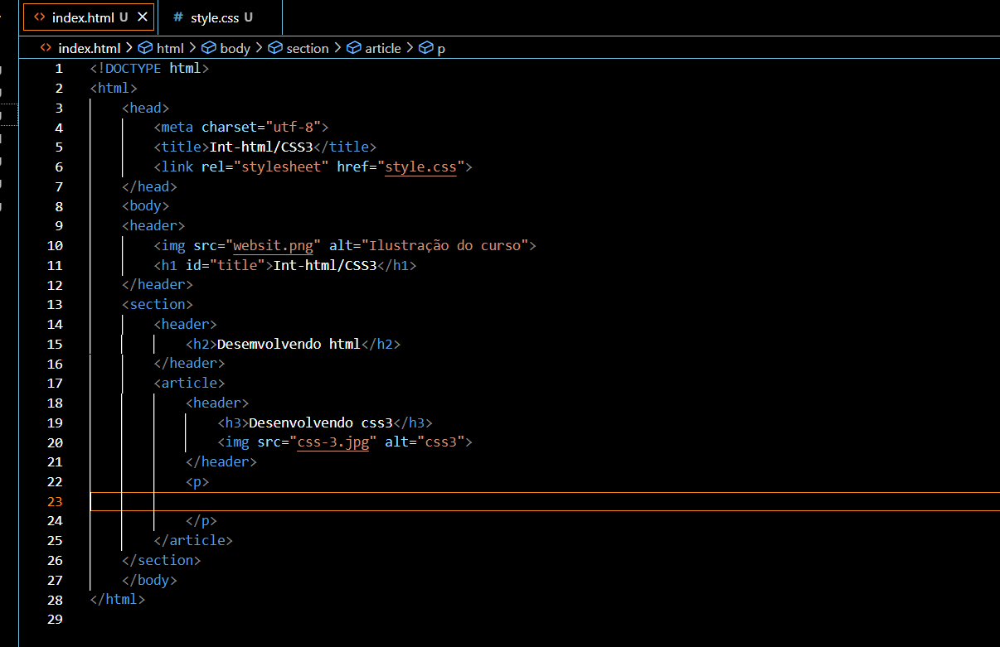
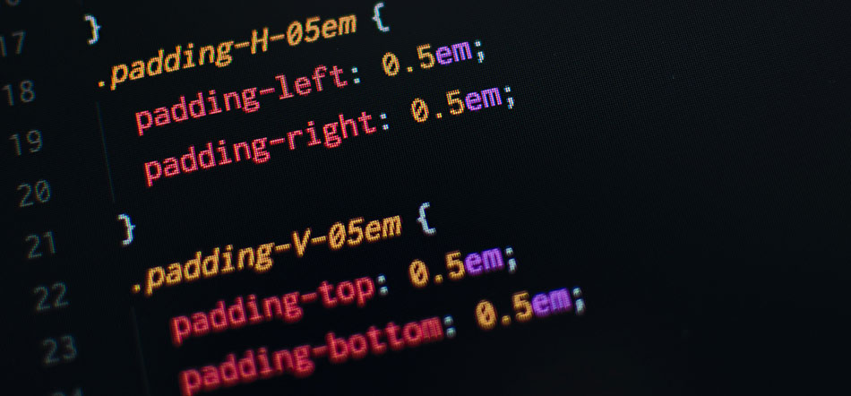

Desenvolvendo html
Desenvolvendo css3
Tecnologia da informação
A Tecnologia da Informação (TI) é considerada como um conjunto não humano de recursos que são empregados nos processos informacionais, como a coleta, armazenamento, processamento e distribuição (DA SILVA ET AL, 2008). Pode ser entendido como um meio que organizações produtivas utilizam para potencializar e alavancar processos de criação e desenvolvimento de capacitação tecnológica. (DE MEDEIROS VALLE, 1996). O desenvolvimento cada vez mais rápido de novas tecnologias de informação modificou também as bibliotecas e os centros de documentação (principais locais de armazenamento de informação), introduzindo novas formas de organização e acesso aos dados e obras armazenadas; reduziu custos e acelerou a produção dos jornais e possibilitou a formação instantânea de redes televisivas de âmbito mundial.[4] Além disso, tal desenvolvimento facilitou e intensificou a comunicação pessoal e institucional, através de programas de processamento de texto, de formação de bancos de dados, de editoração eletrônica, bem como de tecnologias que permitem a transmissão de documentos, envio de mensagens e arquivos, assim como consultas a computadores remotos (via rede mundiais de computadores, como a Internet). A difusão das novas tecnologias de informação trouxe também impasse e problemas, relativos principalmente à privacidade dos indivíduos e ao seu direito à informação, pois os cidadãos geralmente não têm acesso a grande quantidade de informação sobre eles, coletadas por instituições particulares ou públicas.[carece de fontes] As tecnologias da informação não incluem somente componentes de máquina. Existem tecnologias intelectuais usadas para lidar com o ciclo da informação, como técnicas de classificação, por exemplo, que não requerem uso de máquinas apenas em um esquema. Esse esquema pode, também, ser incluído em software que será usado, mas isso não elimina o fato de que a técnica já existia independentemente do software. As tecnologias de classificação e organização de informações existem desde que as bibliotecas começaram a ser formadas. Qualquer livro sobre organização de bibliotecas traz essas tecnologias.[carece de fontes] Os maiores desenvolvedores mundiais desse tipo de tecnologia são Suécia, Finlândia, Suíça, Israel, Singapura, Países Baixos e os Estados Unidos; segundo o Relatório Global de Tecnologia da Informação 2015-2016 do Fórum Econômico Mundial. O Brasil é o 72ª nesse ranking.[5]